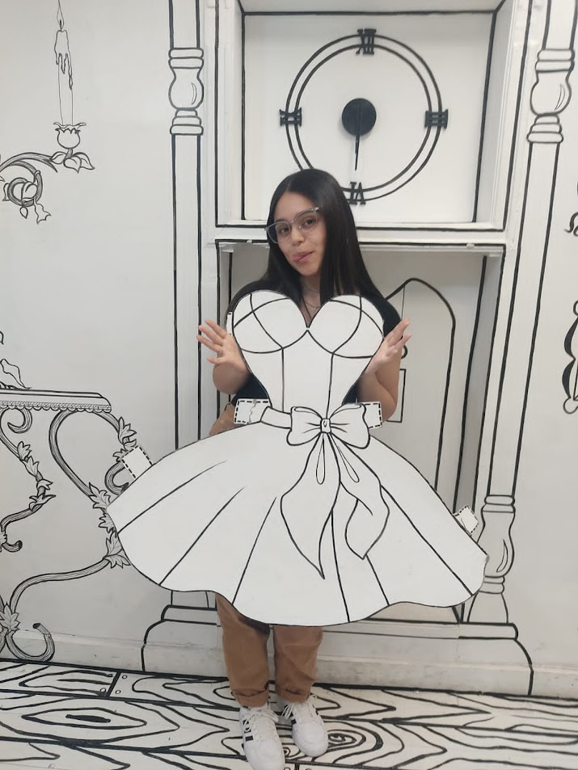

QUE SIGNIFICAS PARA MI?

Creo que para estos 4 meses has sido la mejor persona que he conocido en mi vida la que me hace mis dias malos buenos la que esta ahi en todo momento a mi me pareceria imposible estar con una persona tan bonita como tu porque eres maravillosa como persona , la forma en la que me miras me ilumina, la que me sonrie me da luz ,tu version tierna me encanta quiero que sepas que al estar conmigo tu eres y siempre seras mi prioridad ante todo porque eres importante en mi vida eres mi tesoro que mas cuido y aprecio.